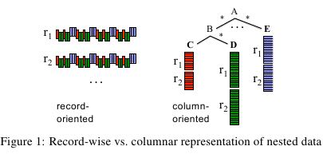
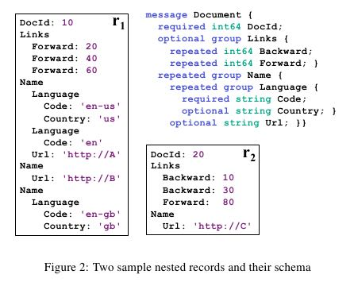
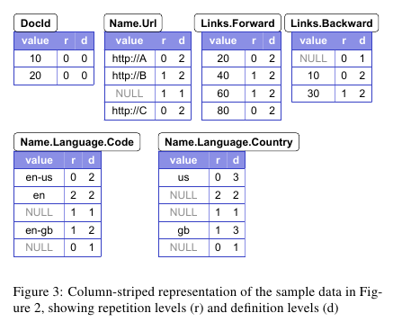
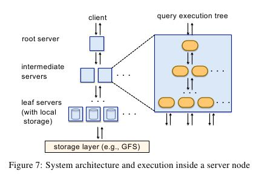
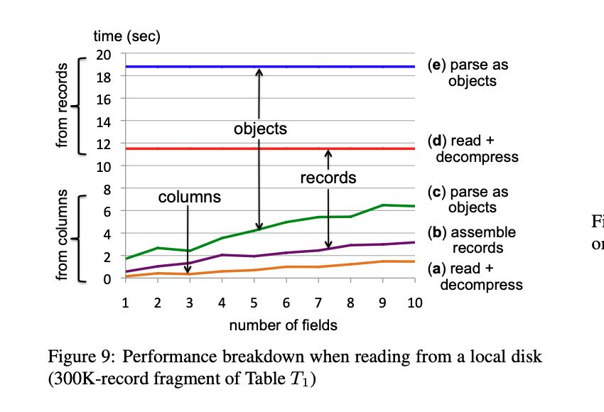
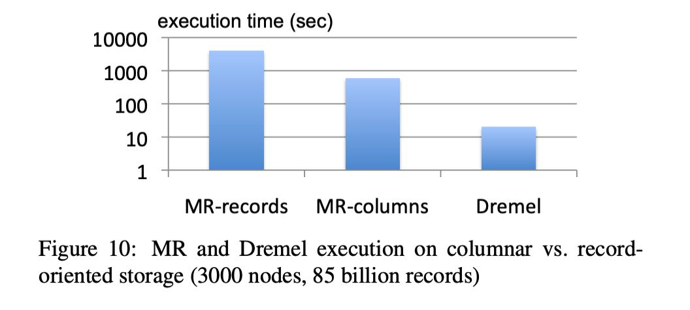
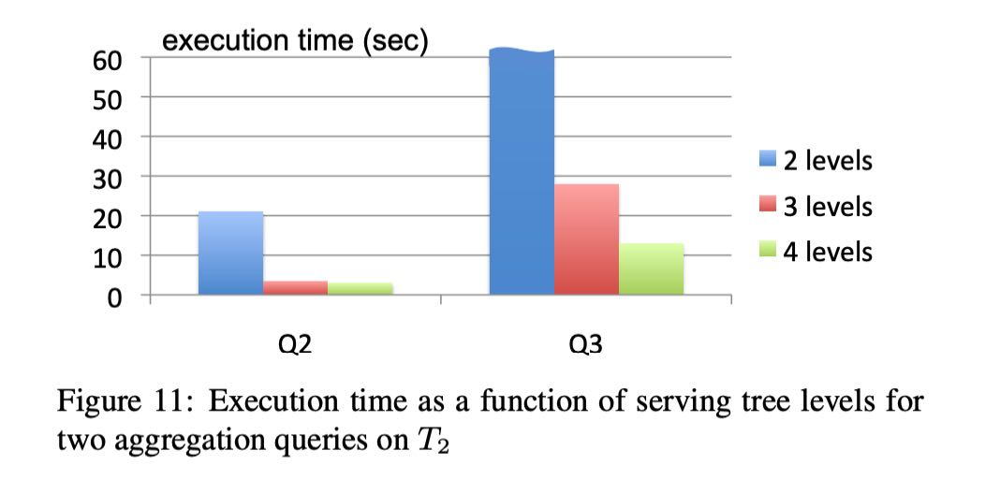
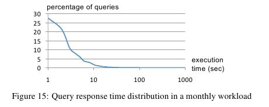

Dremel: Interactive Analysis of Web-Scale Datasets
Table of Contents
1. Abstract
- Dremel is a scalable, interactive ad-hoc query system for analy-sis of read-only nested data. （着重处理只读的嵌套数据，主要针对交互式的ad-hoc查询，并且有良好的可扩展性）
- By combining multi-level execution trees and columnar data layout, it is capable of running aggrega-tion queries over trillion-row tables in seconds. （秒级处理trillion数据/million million，精髓就是多层树型执行模型，以及数据按照column方式进行存储）
- The system scales to thousands of CPUs and petabytes of data, and has thousands of users at Google.（使用规模，上千个CPU，以及PB级别的数据，上千个用户使用）
2. Introduction
- This paper describes a system called Dremel1 that supports inter-active analysis of very large datasets over shared clusters of com-modity machines. （允许在廉价的集群上面进行大规模数据的交互式分析）
- Unlike traditional databases, it is capable of op-erating on in situ nested data. In situ refers to the ability to access data ‘in place’, e.g., in a distributed file system（支持原生嵌套数据，这点和传统的关系型数据库不太一样。可能传统关系数据库对这类嵌套数据没有特别好的支持）
- Dremel can execute many queries over such data that would ordinarily require a sequence of MapReduce jobs, but at a fraction of the execution time. （dremel所作的工作非常类似于多个MR一起工作，但是时间远远比这些MR一起执行要少，这类还是归结于其MPP结构，许多中间结果其实是不用到磁盘上的）
- Dremel is not intended as a replacement for MR and is often used in conjunction with it to analyze outputs of MR pipelines or rapidly prototype larger computations.（dremel定位来说不是MR的replacement，并且经常和MR配合使用。MPP在执行shuffle的时候，其实是可以依赖MR的）
下面是一些在google内部使用到dremel的地方：
- Analysis of crawled web documents.
- Tracking install data for applications on Android Market.
- Crash reporting for Google products.
- OCR results from Google Books.
- Spam analysis.
- Debugging of map tiles on Google Maps.
- Tablet migrations in managed Bigtable instances.
- Results of tests run on Google’s distributed build system.
- Disk I/O statistics for hundreds of thousands of disks.
- Resource monitoring for jobs run in Google’s data centers.
- Symbols and dependencies in Google’s codebase.
下面是dremel三个比较重要的技术点： Dremel builds on ideas from web search and parallel DBMSs.（dremel很多技术来自与web检索以及并行DMBS）
- First, its architecture borrows the concept of a serving tree used in distributed search engines . Just like a web search request, a query gets pushed down the tree and is rewritten at each step. The result of the query is assembled by aggregating the replies received from lower levels of the tree. （首先在架构上面借鉴了分布式搜索引擎的serving tree概念，能够将一个query进行rewrite成为多个小的查询，分摊到底层节点执行然后在上层聚合起来）
- Second, Dremel provides a high-level, SQL-like language to express ad hoc queries. In contrast to layers such as Pig and Hive, it executes queries natively without translating them into MR jobs. （提供了SQL-like的查询语言，和Pig以及Hive不太一样的是，dremel直接执行而没有转换成为MR jobs）
- Lastly, and importantly, Dremel uses a column-striped storage representation, which enables it to read less data from secondary storage and reduce CPU cost due to cheaper compression. Column stores have been adopted for analyzing relational data but to the best of our knowledge have not been extended to nested data mod-els. The columnar storage format that we present is supported by many data processing tools at Google, including MR, Sawzall , and FlumeJava. （使用了列式存储，使得查询的话可以只是读取部分数据，减少IO以及CPU时间。列式存储广泛用于关系数据模型但是没有用于嵌套数据模型） 支持嵌套数据的列式存储以及分析是dremel的很大一个亮点，并且SQL query出来的结果也可以是嵌套数据。
3. Background
行式和列式存储

4. Data Model
5. Nested Columnar Storage
这节讲的内容主要就是说，如何在行式存储和为列式存储之间无损地进行转换。
- Splitting Records into Columns 【把记录拆分成为列】
- Record Assembly【将多列组合成为记录】
如何在column里面保存下value的一些位置信息。需要添加上
- Repetition levels.
- Definition levels.
后面以下图为例


所谓r的意思就是说，最近包含这个value，并且repeat的field，是第几个。0表示record开始，有特殊意义。我们以Name.Language.Country为例。
- 第一个us是开始的记录，所以为r==0
- 在Code=='en'这个部分有一个NULL值，可以看到Language重复出现了，所以r==2
- 第二个gb，可以看到Language并没有重复，是在那层Name里面的第一个，而Name重复了，那么r==1
- 而在Url=='http://B'这里，没有出现Language，而Name重复了，那么r==1
而d的意思就是说，这个value的field path上面，有多少个字段是可以undefined的，但是却出现了。同样以Country为例
- 第一个us可以看到三个字段其实都可以不存在，但是却都存在了，所以d==3
- 后面NULL，只有Name和Language出现了，所以d==2
- 后面NULL，只有Name出现了，所以d==1
- gb这条记录，三个字段都出现所以d==3
作者认为对于一个value来说，完全可以根据这个value对应的field name，以及r，d，完全构造出nested data。并且作者针对种种特性做了encoding的优化，使得column在存储上面尽可能地紧凑。
r,d的定义差不多看懂了：
- r 表明当前这个值是从root到field，有几个repeated/optional字段定义了。r=0表示新开一个记录
- d 表示当前这个值是从root到field，有几个repeated/optional字段是有定义的。
- NULL可以不用存储下来，只需要判断def_level是否小于max_def_level就行。
这个存储格式在内叫做ColumnIO，开源实现有 Parquet。
6. Query Language
7. Query Execution
类似搜索引擎的树形架构，特征就是fanout比较大，可以做到特别高的并行度。这种树形结构，在一定程度上是独立的：每个节点上可以自己解析物理计划，以及判断是否需要拆分，当然也可以强制拆分。关于树形结构的fanout层级和个数，在实验那节有介绍。

Query dispatcher. Dremel is a multi-user system, i.e., usually several queries are executed simultaneously. A query dispatcher schedules queries based on their priorities and balances the load. Its other important role is to provide fault tolerance when one server becomes much slower than others or a tablet replica becomes un-reachable. （一方面可以用来处理优先级以及平衡负载，另外一方面可以用来监控哪些server运行比较慢来完成容错处理。文中提到的模型类似于threadpool机制，每个server上面启动多少个thread，每个thread相当于一个slot。和MR差别就是，因为这个thread可以执行任何工作，所以可以把thread看作slot，而在MR里面只能将process看做slot）
During query ex-ecution, the query dispatcher computes a histogram of tablet pro-cessing times. If a tablet takes a disproportionately long time to process, it reschedules it on another server. Some tablets may needto b e redispatched multiple times.（在执行过程中，dispatcher会绘制每个tablet处理时间的直方图。如果某个tablet处理时间过长的话，那么会被reschedule到其他server上面的slot，对于一个tablet可能会被reschedule多次）. 【不知道这个算不算是work-stealing机制】
The leaf servers read stripes of nested data in columnar represen-tation. The blocks in each stripe are prefetched asynchronously; the read-ahead cache typically achieves hit rates of 95%. Tablets are usually three-way replicated. When a leaf server cannot access one tablet replica, it falls over to another replica. （预取可以达到95%的cache命中）
The query dispatcher honors a parameter that specifies the min-imum percentage of tablets that must be scanned before returning a result. As we demonstrate shortly, setting such parameter to a lower value (e.g., 98% instead of 100%) can often speed up execu-tion significantly, especially when using smaller replication factors.（允许指定某个tablet返回部分数据。通过将这个比例调低可以很大程度上加快执行速度，尤其是对于small-replication factor的tablet来说. small-replication factor的tablet很容易受到straggler影响，所以针对这种情况可以指定扫描到一定程度就停止）
8. Experiments
对比了下面节点：
- 按照行/列解析的代价差异
- MR/Dremel之间的差异
- 树形结构层次对查询延迟影响
- 每个Tablet处理时间：大约是在1~2s左右。
- Scalability(扩展性)： 非常好
- Straggler（慢节点）：每个节点通常只需要处理4-5 tablets(<10s), 但是慢节点可以到分钟级别。
下图是行/列解析之间差异，可以看到如果选择10个列，列解析优势非常明显。按照这个趋势，估计要到上百列，可能行/列解析代价才会接近。

对于了MR record/column oriented以及Dremel的差异，可以看到MR改成了列式之后性能提升一个量级，而Dremel比MR column又提升一个量级

fanout对比了2/3/4-levels:
- 2L: 1:2900
- 3L: 1:100:2900
- 4L: 1:10:100:2900
其中Q2/Q3分别是, 都是project-select-agg, 不过Q2 country结果集在100左右，而Q3在1.1M左右.
Q2: SELECT country, SUM(item.amount) FROM T2 GROUP BY country Q3: SELECT domain, SUM(item.amount) FROM T2 WHERE domain CONTAINS ’.net’ GROUP BY domain

9. Observations
Dremel scans quadrillions of records per month. Figure 15 shows the query response time distribution in a typical monthly workload of one Dremel system, on a logarithmic scale. As the figure indi-cates, most queries are processed under 10 seconds, well within the interactive range. Some queries achieve a scan throughput close to 100 billion records per second on a shared cluster, and even higher on dedicated machines. （可以看到大部分的读取时间都非常小，没有长尾）

- Scan-based queries can be executed at interactive speeds on disk-resident datasets of up to a trillion records.
- Near-linear scalability in the number of columns and servers is achievable for systems containing thousands of nodes.
- MR can benefit from columnar storage just like a DBMS.
- Record assembly and parsing are expensive. Software layers (beyond the query processing layer) need to be optimized to directly consume column-oriented data.（行式和列式存储之间的转换代价非常大，所以针对列式存储的native操作十分必要）
- MR and query processing can be used in a complementary fashion; one layer’s output can feed another’s input.
- In a multi-user environment, a larger system can benefit from economies of scale while offering a qualitatively better user experience.
- If trading speed against accuracy is acceptable, a query can be terminated much earlier and yet see most of the data.（只有一小部分数据的查询时间非常长，如果可以把这部分数据舍弃掉，那么延迟可以减少许多）
- The bulk of a web-scale dataset can be scanned fast. Getting to the last few percent within tight time bounds is hard.（针对web-scale dataset是可以做到快速扫描的，但是小部分数据的查询时间非常难以保证）
- Dremel’s codebase is dense; it comprises less than 100K lines of C++, Java, and Python code.（10w行代码）
10. Related Work
11. Conclusion
12. Appendix
TODO: 这里面几个算法都有点没有太看懂:
- shredding column. 按照字段遍历然后记录r/d
- record assembly. 是根据r来创建fsm.